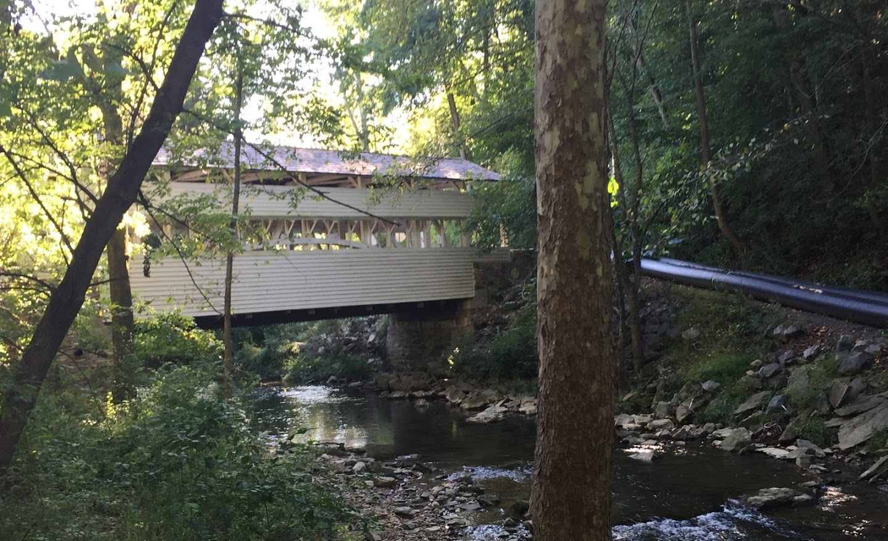
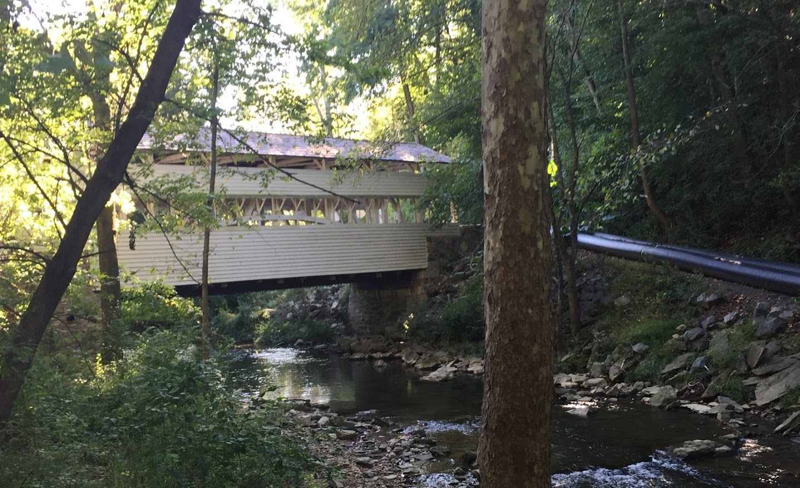

About Me
My name is Sita Robinson. I am a Junior Data Science major at Drexel University with a minor in Computer Science.
I am expected to graduate with my Bachelors degree in 2020.
I am the president of Drexel Women in Computing Society (WiCS). Previously I was treasurer of WiCS for two years.
My last job was in a data science co-op (6 month internship) at ELAP Services in Chesterbrook, Pennsylvania.
In the summer of 2017, I was a Software Engineering Intern at Comcast in Philadelphia.
Some of my hobbies include programming, photography, playing the clarinet, playing Scrabble and traveling around the world. I am originally a Northern Virginia/Metro D.C. native.
Work Experience
Data Science Co-op at ELAP Services
September 24, 2018-March 20, 2019
Software Engineering Intern at Comcast
June 19, 2017-August 25, 2017
Skills
Intermediate: HTML/CSS, Javascript, Firebase, Microsoft SQL, MySQL, Oracle SQL, Android Studio, Python, Markdown, Jupyter Notebook, C++
Beginner: R, Node.js, ArcGIS (ArcMap, ArcGIS Online), LaTeX, Ruby on Rails, Java, Unix, Tableau, JQuery Mobile, JQuery, Flask
Projects
Malaria Detection-Personal Project
Used a CNN model to classify images as being parasitized or not. Leveraged the Fast.ai library and Python.
Fashion MNIST Clothing Classification-Personal Project
Used deep learning algorithms and techniques to classify clothing images. Built using Tensorflow, Keras and Python.
News Tweet Analysis
Performed natural language processing on Twitter feeds using the Tweepy streaming API, Python, NLTK, Beautiful Soup and MongoDB.
Quali-Personal Project
Competed in UPenn’s annual Femmehacks hackathon and developed a web application with backend to match the skills and qualifications needed for a job. Created a web scraper using the Beautiful Soup library in Python to scrape job data from Indeed.com. Leveraged text analytics to match employee skills to job postings. Used Flask which is a framework to run Python as a web server.
Graduate Admissions Analysis-Personal Project
Built a machine learning model using the linear regression and random forest algorithms to analyze what factors are most important for student performance on exams. The model was generated using the “Student Performance in Exams” dataset from Kaggle. This project was completed using R.
Student Performance Analysis-Personal Project
Built machine learning models using linear regression and random forest to predict student performance using the Student Performance in Exams dataset from Kaggle. Performed pre-processing and exploratory data analysis. This project was completed using the R language.
Mushroom Classification
Used the Python Scikit-Learn library to train and test the “Mushroom Classification” dataset from Kaggle to predict whether a mushroom is poisonous or edible. Used classification algorithms including SVM, Naive Bayes, and Logistic Regression.
Food Production Analysis
Data pre-processing and exploratory data analysis on the "Who eats the food we grow?" dataset from Kaggle.
Python Word Cloud-Personal Project
Experimented with text analysis using Python wordcloud, numpy, matplotlib, and Jupyter Notebooks. Used the text from the Adventures of Sherlock Holmes by Sir Arthur Conan Doyle.
Listy
A web app that allows people to make their own checklists and share with other members. Uses HTML, Javascript, JQuery Mobile, Bootstrap, MySQL, and NodeJS.
NOVA Datascience Signin and Attendee Randomizer-Personal Project
A web app for the NOVA DataScience Meetup Group that includes a sign-in form and a randomizer for prizes. Uses Firebase which is a NoSQL Database along with HTML and Javascript.
BuddyU App
An android social app for Drexel University students to collaborate on their schedules with the goal of making class time more efficient, collaborative, and fun. Made using Firebase and Android Studio.
The Kiddy Learner-Personal Project
A fun website that provides educational information about scientific cycles for children.
Places I've Traveled
My Photos


 


Ⓒ Sita Robinson 2017